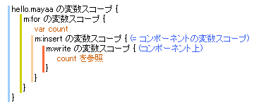

Documentation
2-6. HTML 部品 (動的)
コンポーネントで動的な表示を扱ってみましょう。スクリプトを使う方法などは通常のテンプレートと同じですので、特別なのは親 (利用する側) のページとの値の受け渡しです。基本的な考え方としては、コンポーネントを利用する m:insert タグの位置に、コンポーネントの内容を直接書いた場合と同じです。
 コンポーネントで親ページの変数を使う
コンポーネントで親ページの変数を使う
次のサンプルはコンポーネント側で必要とする変数を決め、それを親ページ側であらかじめセットしておく方法のサンプルです。コンポーネントは "Hello Mayaa!" という文字列に続けて変数 count の内容を出力します。親ページは for プロセッサを使いコンポーネントを繰り返し使用します。そのときのループカウンタとして count を使うようにします。
hello.html<html> <body> <h1>Hello</h1> <span id="loop"> <div id="comp">dummy</div> </span> </body> </html>hello.mayaa<?xml version="1.0" encoding="ISO-8859-1"?> <m:mayaa xmlns:m="http://mayaa.seasar.org"> <m:for id="loop" init="${ var count = 0 }" test="${ count < 5 }" after="${ count++ }" /> <m:insert id="comp" path="/component.html" /> </m:mayaa>component.html<html> <body> <h1>dummy for preview</h1> <span id="centered"> <div id="message" style="text-align: center">component value</div> </span> </body> </html>component.mayaa<?xml version="1.0" encoding="ISO-8859-1"?> <m:mayaa xmlns:m="http://mayaa.seasar.org"> <m:doRender id="centered" /> <m:write id="message" value="Hello Mayaa! ${ count }" replace="false" /> </m:mayaa>
ブラウザで http://localhost:8080/mayaa/hello.html にアクセスしてみましょう。
実行結果 (改行などは実際の実行結果と異なります)<html> <body> <h1>Hello</h1> <div id="message" style="text-align: center">Hello Mayaa! 0</div> <div id="message" style="text-align: center">Hello Mayaa! 1</div> <div id="message" style="text-align: center">Hello Mayaa! 2</div> <div id="message" style="text-align: center">Hello Mayaa! 3</div> <div id="message" style="text-align: center">Hello Mayaa! 4</div> </body> </html>
親テンプレート側の変数を素直に利用できていることがわかります。イメージとしては、JavaScript の変数スコープの考え方と同じです。もしコンポーネントの処理をするスコープで count という名前の変数がない場合、変数が見つからないというエラーが発生します。

親ページからコンポーネントに変数を渡す
親ページから変数を明示的にコンポーネントへ渡すこともできます。m:insert タグの属性として「変数名="値"」と書くことで、指定した変数をコンポーネントに渡すことになります。コンポーネントのタイトルやキャプションを指定する場合などに便利です。
渡された変数を参照する場合、${ binding.変数名 } と書きます。存在しない変数名を指定すると null が返ります。
hello.html<html> <body> <h1>Hello</h1> <div id="comp">dummy</div> </body> </html>hello.mayaa<?xml version="1.0" encoding="ISO-8859-1"?> <m:mayaa xmlns:m="http://mayaa.seasar.org"> <m:insert id="comp" path="/component.html" title="Component Title" /> </m:mayaa>component.html<html> <body> <h1>dummy for preview</h1> <span id="centered"> <h2><span id="componentTitle">Dummy Title</span></h2> <div id="message" style="text-align: center">component value</div> </span> </body> </html>component.mayaa<?xml version="1.0" encoding="ISO-8859-1"?> <m:mayaa xmlns:m="http://mayaa.seasar.org"> <m:doRender id="centered" /> <m:write id="componentTitle" value="${ binding.title }" /> <m:write id="message" value="Hello Mayaa!" replace="false" /> </m:mayaa>実行結果 (改行などは実際の実行結果と異なります)<html> <body> <h1>Hello</h1> <h2>Component Title</h2> <div id="message" style="text-align: center">Hello Mayaa!</div> </body> </html>
この表記法のため、insert プロセッサが本来持つ属性名と同じ変数名 (たとえば id, path) はそのままでは使用できません。そのような変数を渡すには、属性の名前空間を mayaa の名前空間以外にします。
この変数の渡し方は、insert プロセッサの属性として正しくない属性を変数として扱うという仕組みのため、どんな名前空間を使っても問題ありません。プレフィクスを付けた場合でも、変数名には属性のローカル名 (プレフィクスの無い状態) が使われます。
独自の名前空間を作って割り当てるhello.mayaa<?xml version="1.0" encoding="ISO-8859-1"?> <m:mayaa xmlns:m="http://mayaa.seasar.org" xmlns:x="my_namespace"> <m:insert id="comp" path="/component.html" x:title="Component Title" /> </m:mayaa>
request, session で値を共有する
もちろん、request や session を使って値を共有することもできます。特別なことは何もありませんので説明は省略します。